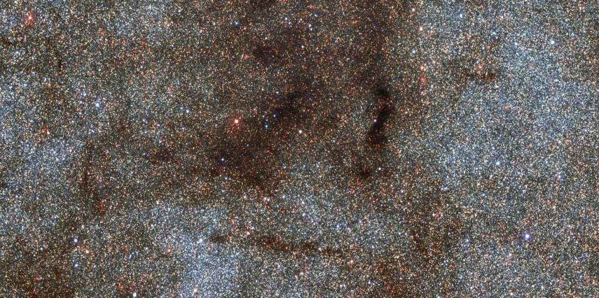

ဒီနေရာမှာ မေးစရာ ရှိလာတာက စကြာဝဠာ အစဦးမှာ ကြယ်တွေ အရင် ဖြစ်ထွန်း မွေးဖွား လာကြပြီးမှ ဒီ ကြယ်တွေ တစ်ခုနဲ့ တစ်ခု စုသွားပြီး ဂလက်ဆီ တွေ ဖြစ်လာတာလား၊ သို့မဟုတ် ဂလက်ဆီ တွေဟာ ကြယ်တွေနဲ့ အတူ တစ်ပြိုင်တည်း ဖြစ်ထွန်း မွေးဖွားလာ ကြတာလား ဆိုတဲ့ မေးခွန်းပဲ ဖြစ်ပါတယ်။
သိပ္ပံ ပညာရှင် တွေဟာ စကြာဝဠာ အစဦး Big Bang မဟာ ပေါက်ကွဲမှု အပြီး အလွန် ပူပြင်းတဲ့ အခြေအနေမှာ အီလက်ထရွန် နဲ့ ပရိုတွန်တို့ ပေါင်းစပ်ပြီး ပထမဆုံး အက်တမ်တွေ ဘယ်အချိန်မှာပေါ်ပေါက်လာလဲ ဆိုတာကို သိပြီး ဖြစ်ပါတယ်။
တဖြည်းဖြည်း စကြာဝဠာကြီး ပိုပို အေးလာတာနဲ့ အမျှ စကြာဝဠာ ဦးဆုံး ကြယ်တွေဖြစ်ပေါ်လာကြပါတယ်။
နောက်ပြီး စကြာဝဠာ ဖြစ်တည်စ ပထမ စက္ကန့်ပိုင်း အတွင်း ဘာတွေ ဖြစ်ခဲ့လဲ ဆိုတာကိုလဲ သေသေချာချာ သိပြီး ဖြစ်ပါတယ်။
ယနေ့ နက္ခတ် ပညာရှင် တွေဟာ စကြာဝဠာ ကြီးကို ကြယ်တွေ၊ Black hole တွင်းနက်တွေ၊ ဓါတ်ငွေ့တွေ နဲ့ ဖုန်မှုန့် တိမ်တိုက်တွေ၊ နောက်ပြီး dark matter လို့ ခေါ်တဲ့ အမှောင် ဒြပ် တွေနဲ့ ဖွဲ့စည်း တည်ဆောက် ထားတယ်ဆိုတာ သိရှိနေ ကြပါပြီ။ ဒီ အရာဝတ္ထုတွေ စုပေါင်းပြီး ဂလက်ဆီ ကြီးတွေ ဖြစ်တည်လာ ကြတာပါ။
ဆက်စပ် ဆောင်းပါး – ဂလက်ဆီ (Galaxy) ဆိုတာဘာလဲ
အချို့ ဂလက်ဆီ တွေဟာ ခရုပတ်ခွေ ပုံစံ ဖြစ်နေကြပါတယ်။ အချို့ ဂလက်ဆီ တွေကျတော့ ဘဲဥပုံ၊ အချို့က ပုံပျက် ပန်းပျက် စသဖြင့် ပုံသဏ္ဍာန် အမျိုးမျိုး ရှိကြတာပါ။
ဒါပေမယ့် ကြယ်တွေနဲ့ ဂလက်ဆီ တွေ ဘယ်ဟာက အရင် ဖြစ်လာ တာလဲဗျ။
Big Bang မဟာ ပေါက်ကွဲမှုကြီး နောက် ဖြစ်လာတဲ့ ဟိုက်ဒြိုဂျင်နဲ့ ဟီလီယမ် ဓါတ်ငွေ့တွေ စုပြီး ဂလက်စီတွေ အရွယ် ကြီးမားတဲ့ ဓါတ်ငွေ့ တိမ်တိုက်ကြီးတွေ ဖြစ်လာတယ်။ ဒီ ဓါတ်ငွေ့ တိမ်တိုက် ကြီးတွေ ထဲမှာမှ ကြယ် အသစ်တွေ မွေးဖွားလာ ကြမယ်။ ဒီလိုမျိုး ဂလက်ဆီ တိမ်တိုက်ကြီးတွေ ဖြစ်လာပြီးမှ ကြယ်တွေ ဖြစ်လာတာလား။
ဒီလိုမှ မဟုတ်ပဲ ဓါတ်ငွေ့တိမ်တိုက် အစုလေးတွေ ကနေ ကြယ်တွေ ဖြစ်လာမယ်။ ဒိကြယ်တွေက အချင်းချင်း ဆွဲငင်မှုကြောင့် ဂလက်ဆီ တွေ အဖြစ် တဖြည်းဖြည်း စုမိသွားမယ်။ ဒီလိုမျိုး ကြယ်တွေ အရင် စဖြစ်ပြီးမှ ဂလက်ဆီတွေ အဖြစ် စုစည်းမိ သွားတာမျိုးလား။

ဘာလို့လဲ ဆိုတော့ စကြာဝဠာ အစဦးပိုင်းမှာ ပထမဆုံး ဖြစ်ပေါ် လာတာတွေဟာ ကြယ်တွေလဲ မဟုတ်သလို ဂလက်ဆီ တွေလဲ မဟုတ်ပါဘူးတဲ့။ ဘာလို့လဲ ဆိုတော့ အဲ့တုန်းက စဖြစ်တဲ့ ဂလက်ဆီ ဆိုတာမျိုးက ခုခေတ် မြင်နေရတဲ့ ဂလက်ဆီ တွေနဲ့ ကွာခြားပါတယ်။
ဆက်စပ်ဆောင်းပါး – စကြာဝဠာထဲက အလှဆုံး ဂလက်ဆီများ
နက္ခတ် ပညာရှင် တွေရဲ့ ခန့်မှန်းချက် အရ မဟာ ပေါက်ကွဲမှုကြီး ဖြစ်ပြီး နှစ်သန်း ၂၀၀ လောက် ကာလအတွင်းမှာ စကြာဝဠာ တစ်ခုလုံးဟာ အလွန် ပူပြင်းတဲ့ ဓါတ်ငွေ့တွေနဲ့ ပြည့်နေပါတယ်။
စကြာဝဠာရဲ့ သက်တမ်း နှစ်သန်း ၂၀၀ ခန့် ရောက်တဲ့ အခါမှာတော့ ဓါတ်ငွေ့တွေဟာ အတန်ငယ် အေးလာပြီး ဖြစ်တာမို့ စကြာဝဠာ ရဲ့ ပထမ ဦးဆုံး အရာဝတ္ထုတွေ စတင် မွေးဖွား ဖြစ်တည် လာကြပါတယ်။
ဒီ အဦးဆုံး အရာဝတ္ထုတွေဟာ ခု မြင်တွေ့ရတဲ့ စကြာဝဠာထဲမှာ မရှိတော့တဲ့ အရာဝတ္ထု မျိုးတွေပါ။ သူတို့ကို နက္ခတ် ပညာရှင် တွေက “Mini-haloes” မီနီ ဟေလို တွေလို့ အမည် ပေးထားပါတယ်။
(Halo ဆိုတာက လထီးဆောင်းတဲ့ အခါ လပတ်ခြာလည်မှာ တွေ့ရတဲ့ အလင်းရောင် ကွင်းလေးပါ။ အလင်းရောင် တောက်တောက် တွေရဲ့ ပတ်လည်မှာ တွေ့ရတတ်တဲ့ အဝိုင်းလေးတွေကို ခေါ်တာ ဖြစ်ပါတယ်။)
ဒီ မီနီ ဟေလို လေးတွေဟာ ကျွန်တော်တို့ နေ အစင်း တစ်သန်းလောက် ဒြပ်ထု ရှိပါတယ်။ ဒါပေမယ့် ခုခေတ် ဂလက်ဆီ ကြီးတွနဲ့ ယှဉ်လိုက်ရင်တော့ လက်ရှိ ဂလက်ဆီ တွေရဲ့ ဒြပ်ထုရဲ့ ၀.၀၀၁% လောက်ပဲ ရှိတာပါ။ (တနည်းအားဖြင့် အပုံ ၁၀၀,၀၀၀ ပုံ တစ်ပုံ လောက်ပဲ ဒြပ်ထု ရှိပါတယ်။)
ဒီ မီနီ ဟေလို တွေထဲမှာ စကြာဝဠာရဲ့ ပထမဆုံး ကြယ်တွေ စတင် ပေါက်ဖွား လာခဲ့ကြတာ ဖြစ်ပါတယ်။
အချိန် ကြာလာတာနဲ့ အမျှ တဖြည်းဖြည်း ဒီ မီနီ ဟေလို တွေဟာ အချင်းချင်း ဆွဲငင်အားကြောင့် ပေါင်းစပ် သွားကြပါတယ်။ ဒီနည်းနဲ့ ယနေ့ခေတ် မြင်ရတဲ့ ပုံသဏ္ဍာန် အမျိုးမျိုး ရှိတဲ့ ဂလက်ဆီ တွေ ဖြစ်လာပရတာလို့ နက္ခတ် ပညာရှင် များက ယူဆကြပါတယ်။
Reference: Which came first: stars or galaxies? | BBC Sky at Night